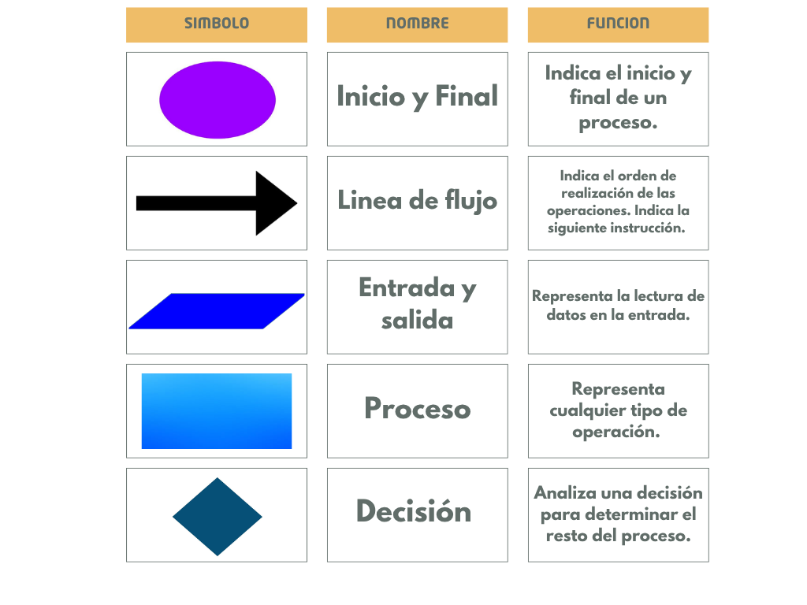
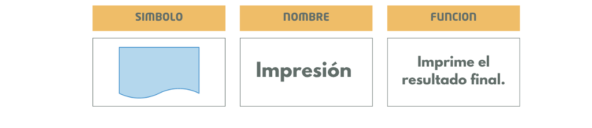
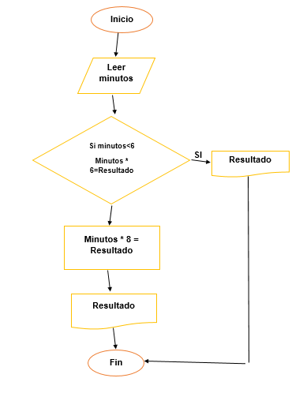
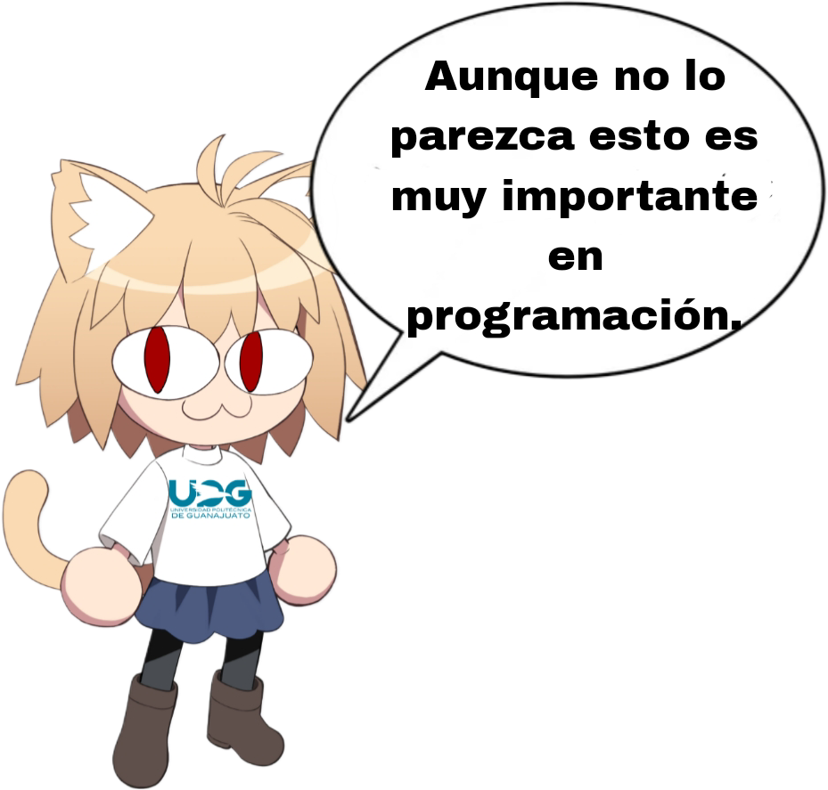

Un diagrama de flujo es una representación gráfica de las etapas de un proceso, trabajo o programa informático, usando figuras geométricas y flechas que indican acciones.
Elementos de un diagrama de flujo:


Ejemplo práctico:
Construye un diagrama de flujo para un sistema que calcule el total a pagar por una llamada telefónica según los minutos:
- Si dura 6 minutos o menos → Costo: 8 pesos.
- Si dura más de 6 minutos → Costo: 10 pesos.

Los diagramas de flujo pueden utilizarse incluso en situaciones cotidianas, como decidir el transporte para ir a la universidad.
¡Es momento de aplicar lo aprendido!
Crea un diagrama de flujo que calcule el costo del boleto según la edad del usuario:
- Menor de 12 años → 4 pesos.
- Entre 18 y 60 años → 10 pesos.
- Mayor de 60 años → Gratis.

Utiliza PSeInt para crear tus propios diagramas de flujo
PSeInt es una herramienta gratuita que te permite escribir pseudocódigo y visualizarlo como un diagrama de flujo.
Pasos para usarlo:
1. Descarga PSeInt desde su página oficial.
2. Abre el programa y selecciona "Diagrama de flujo".
3. Escribe tu algoritmo en pseudocódigo como ( escribir "hola" ).
4. Haz clic en "Ejecutar" para ver el resultado ten en cuenta el "escribir" en este pseudocódigo .
A continuación, puedes escribir un ejemplo de pseudocódigo y ver cómo se ejecutaría :